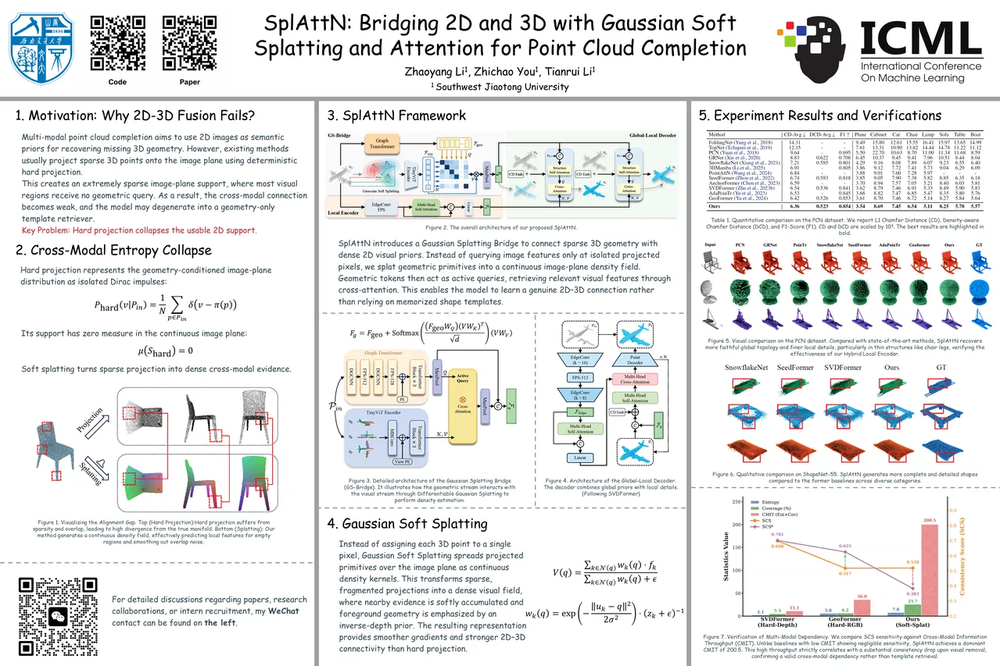
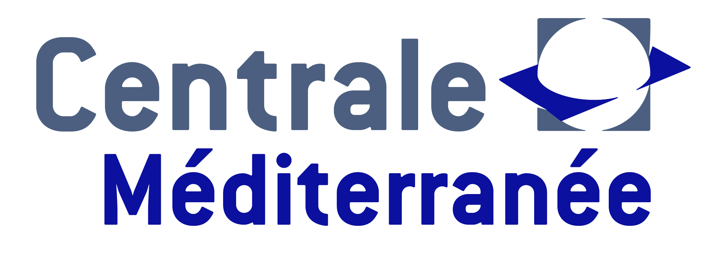

SplAttN: Bridging 2D and 3D with Gaussian Soft Splatting and Attention for Point Cloud Completion
ICML 2026 Spotlight · Top 2.2%
Hi, I am
3D Perception · Robotics · Embodied AI
I study how machines recover geometry, reason across modalities, and move through the world, from point cloud completion to embodied robotic systems.

ICML 2026 Spotlight · Top 2.2%
Preprint
Education
M.Sc. Student, Computer Science
Advisor: Prof. Dr. Tianrui Li
Generalist Engineering student

Undergraduate, Electronic Information Engineering
Robotics Showcase
Pick, inspect, sort, then re-grasp and stack. A coordinated six-transfer assembly sequence.
Navigate between workstations, dock, collect a part, transport it, and place it at the delivery station.
Robot tasks are scripted simulations of system behavior; no live policy inference or hardware control is running.
Engineering
Interactive demonstrations of point cloud processing, mapping, object detection, and visual inspection.
01 / Geometry
Explore point cloud registration, completion, LiDAR mapping, object detection, and industrial inspection.
Concept animations and annotated reference photographs; not live model predictions or recorded project results.
Contact
Open to research collaboration, internships, and full-time opportunities.